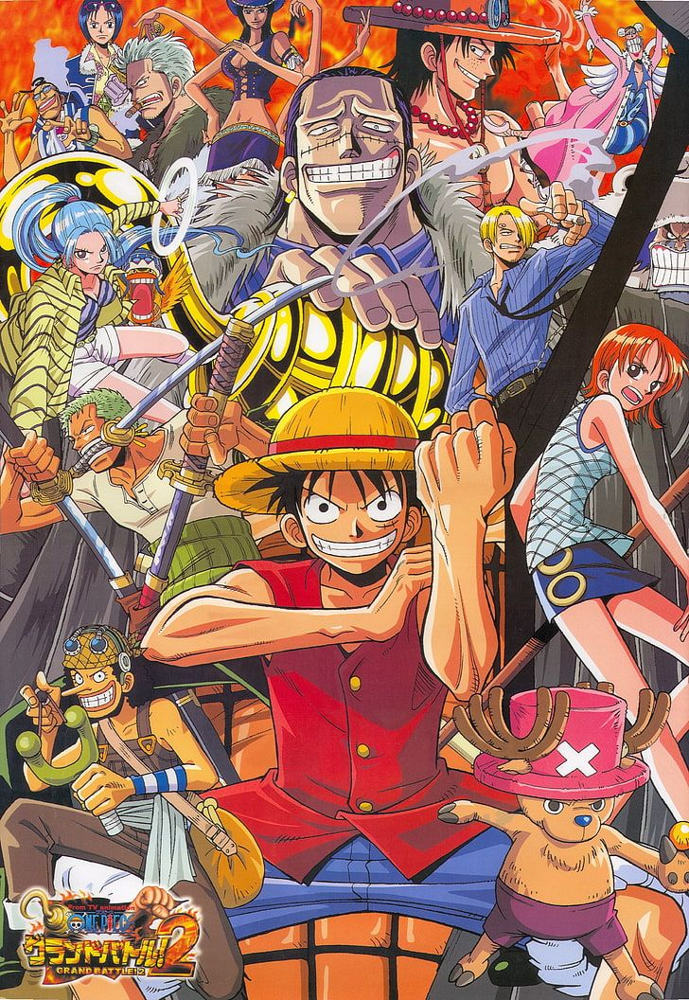
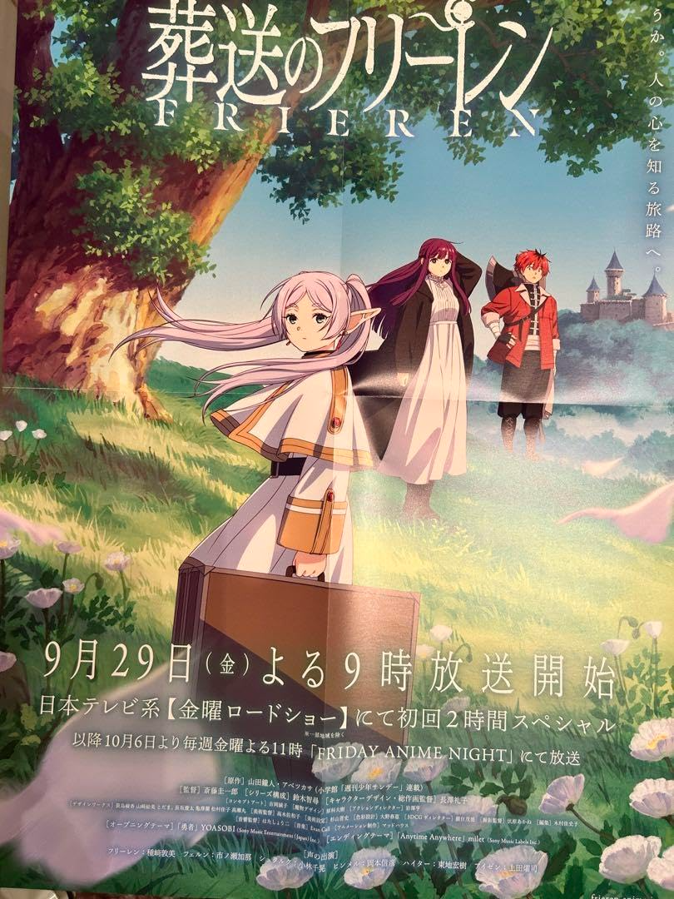
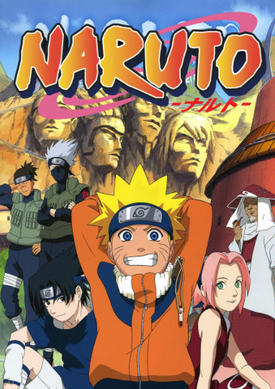
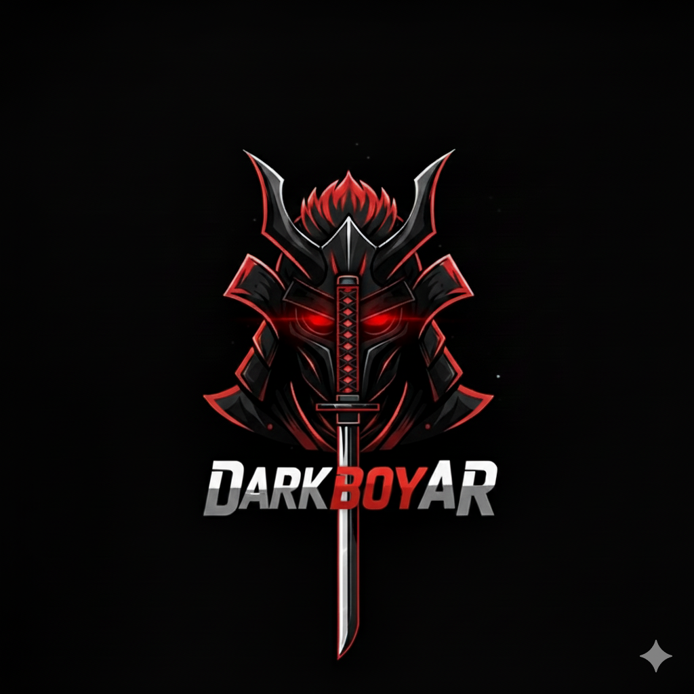

One Piece is an epic adventure following Monkey D. Luffy and his Straw Hat crew as they navigate the treacherous Grand Line to find the legendary treasure and become the Pirate King.

Frieren is an immortal elven mage who, after helping defeat the Demon King, embarks on a journey to understand human life and emotions, regretting her past indifference to their short lifespans.

Naruto is a, globally popular manga and anime series about a determined young ninja, Naruto Uzumaki, who overcomes loneliness and hatred to earn his village's respect and achieve his dream of becoming the Hokage.

DarkBoyAR is a passionate anime fan and content creator, known for his engaging reviews and deep dives into various anime series.